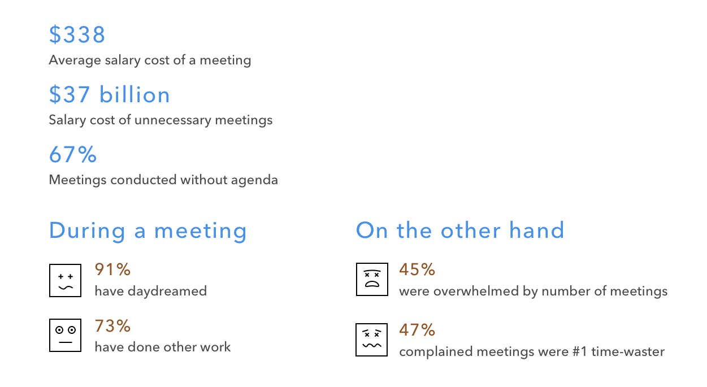
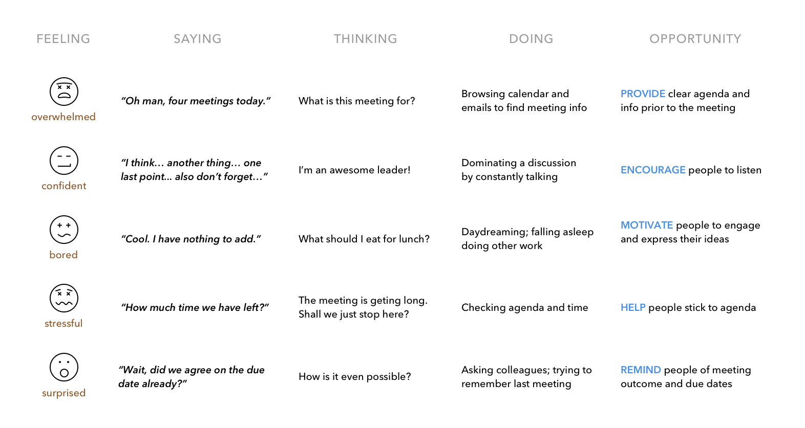
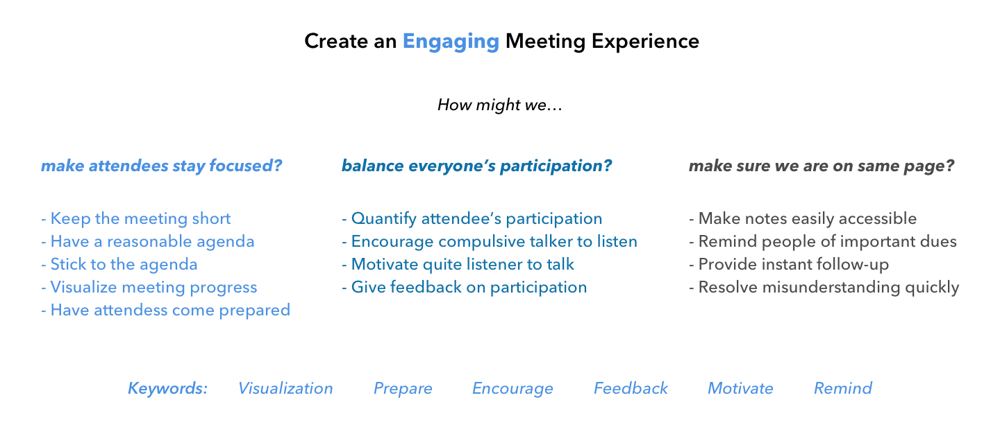
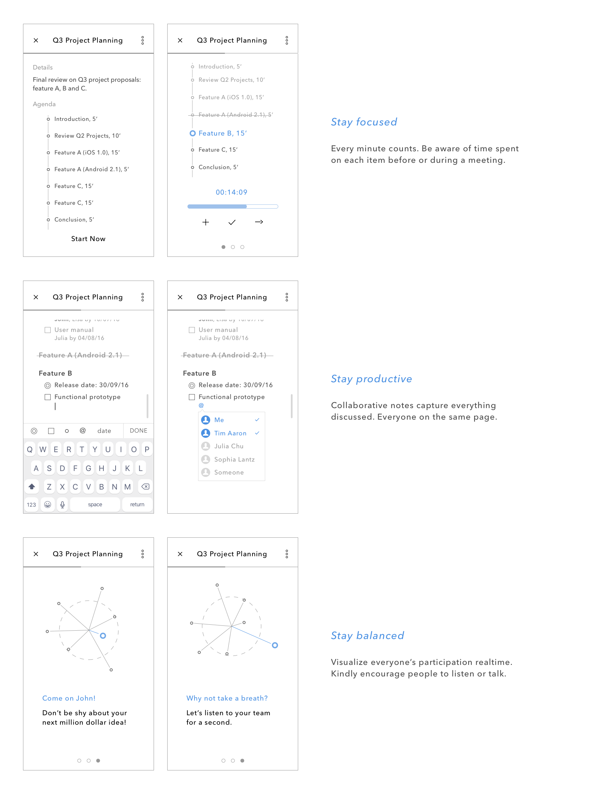
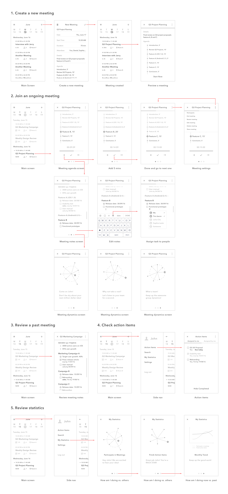

Design Exercise
Please design a mobile app or feature to enhance users meeting experience.
Research
There are a lot of meetings that occur frequently throughout the day to complete work. However, time lost in inefficient meetings ends up dragging out the work progress. I started my exploration by collecting some statistic information about meetings in general. And I was surprised by the amount of time and money wasted on unproductive meetings.

Reference:
Verizon conferencing white paper
Attentiv meeting survey report
Atlassian time wasting at work infographic
I then chatted with three students and two professionals about their recent meeting experiences. I also took some notes during my two meetings this week. Here is some pain my friends and I personally suffer from in our day to day meetings:
1. Meeting goes off track
Sometimes discussion can go in circles and meeting just goes on and on and on, though occasionally the organizer or time keeper may speak up to get meeting back on track.
2. Unbalanced participation
It’s always annoying to have someone in a meeting talking more than his fair share and others barely speaking.
3. No instant follow-up
It’s common for people to have different interpretations of what happened during the meeting. And meeting is not very helpful unless everyone is on the same page about the outcome (decisions, action items and so on).
Design Goal: To create a focused, productive and efficient meeting experience for a small team (6 to 8).
Experience Map
Let's meet John, a product manager at a rising startup. It's 10 am and John is ready for his first meeting of the day.

Ideation
I narrowed down the design challenge to "creating an engaging meeting experience" and brainstormed some solutions. There are three main aspects: How to make attendees stay focused? How to balance everyone's participation? And how to make sure everyone is on the same page?

Design Concept
An engaging meeting should get everyone involved and contributing. But how could we quantify the meeting engagement? For a virtual meeting, it's easy to measure the time each attendee has talked. For an in-personal meeting, if everyone has their mobile phone in front, the microphone could detect when they talk.

Wireframe
